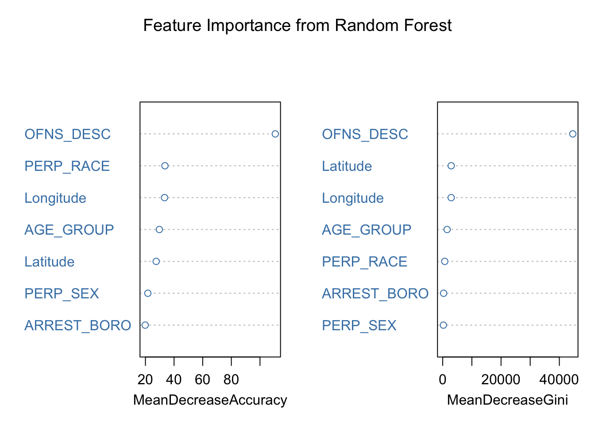

# Set CRAN mirror
options(repos = c(CRAN = "https://cloud.r-project.org"))QUESTION2
code file for second research question
#2
# Load libraries
library(leaflet)
library(leaflet.extras)
library(dplyr)
Attaching package: 'dplyr'The following objects are masked from 'package:stats':
filter, lagThe following objects are masked from 'package:base':
intersect, setdiff, setequal, unionlibrary(ggplot2)
library(plotly)
Attaching package: 'plotly'The following object is masked from 'package:ggplot2':
last_plotThe following object is masked from 'package:stats':
filterThe following object is masked from 'package:graphics':
layoutlibrary(maps)
library(ggmap)ℹ Google's Terms of Service: <https://mapsplatform.google.com>
Stadia Maps' Terms of Service: <https://stadiamaps.com/terms-of-service/>
OpenStreetMap's Tile Usage Policy: <https://operations.osmfoundation.org/policies/tiles/>
ℹ Please cite ggmap if you use it! Use `citation("ggmap")` for details.
Attaching package: 'ggmap'The following object is masked from 'package:plotly':
windlibrary(caret)Loading required package: latticelibrary(nnet)
library(randomForest)randomForest 4.7-1.2Type rfNews() to see new features/changes/bug fixes.
Attaching package: 'randomForest'The following object is masked from 'package:ggplot2':
marginThe following object is masked from 'package:dplyr':
combinearrests_data <- read.csv("/Users/sandhyakanduri/Desktop/semester 1/ STAT515/final project stat/Cleaned_NYPD_Arrest_Data_With_Standardized_Date.csv")
arrests_data <- arrests_data %>% filter(!is.na(Latitude) & !is.na(Longitude))
## Ensure latitude and longitude are numeric
arrests_data$latitude <- as.numeric(arrests_data$Latitude)
arrests_data$longitude <- as.numeric(arrests_data$Longitude)
# You can calculate the intensity based on offense type count per location
# Group by latitude, longitude, and offense_type to calculate the intensity
arrests_data_grouped <- arrests_data %>%
group_by(Latitude, Longitude, OFNS_DESC) %>%
summarise(intensity = n(), .groups = 'drop') %>%
ungroup()#1st map code
# Ensure intensity is numeric
arrests_data_grouped$intensity <- as.numeric(arrests_data_grouped$intensity)
leaflet(data = arrests_data) %>%
addTiles() %>%
addCircleMarkers(
lng = ~Longitude, lat = ~Latitude,
radius = 5, # Adjust the size of markers
color = ~case_when(
LAW_CAT_CD == "F" ~ "red", # Felonies as red
LAW_CAT_CD == "M" ~ "blue", # Misdemeanors as blue
LAW_CAT_CD == "V" ~ "green", # Violations as green
TRUE ~ "gray" # Default color for other categories
),
popup = ~paste(
"<b>Offense:</b>", OFNS_DESC, "<br>",
"<b>Arrest Date:</b>", ARREST_DATE, "<br>",
"<b>Borough:</b>", ARREST_BORO, "<br>",
"<b>Category:</b>", LAW_CAT_CD
),
clusterOptions = markerClusterOptions() # Enable marker clustering
) %>%
addLegend(
position = "bottomright",
colors = c("red", "blue", "green"),
labels = c("Felony", "Misdemeanor", "Violation"),
title = "Offense Categories"
)#2nd map code
# Group data by offense type
offense_counts <- arrests_data %>%
group_by(OFNS_DESC) %>%
summarise(Arrests = n(), .groups = 'drop') %>%
arrange(desc(Arrests))
# Filter to get the top 10 offenses by number of arrests
top_10_offenses <- offense_counts %>%
top_n(10, Arrests) %>%
arrange(desc(Arrests))
# Interactive bar chart using plotly for top 10 offenses
plot_ly(
top_10_offenses,
x = ~reorder(OFNS_DESC, -Arrests), # Sort offenses by count
y = ~Arrests,
type = 'bar',
text = ~Arrests,
textposition = 'auto',
marker = list(color = 'skyblue')
) %>%
layout(
title = "Top 10 Offenses by Number of Arrests",
xaxis = list(title = "Offense Type", tickangle = -45),
yaxis = list(title = "Number of Arrests"),
margin = list(b = 100) # Add margin for x-axis labels
)# Filter relevant columns
model_data <- arrests_data %>%
select(LAW_CAT_CD, Latitude, Longitude, OFNS_DESC, ARREST_BORO, AGE_GROUP, PERP_SEX, PERP_RACE) %>%
filter(!is.na(LAW_CAT_CD))
# Convert necessary columns to factors
model_data <- model_data %>%
mutate(
LAW_CAT_CD = as.factor(LAW_CAT_CD),
ARREST_BORO = as.factor(ARREST_BORO),
AGE_GROUP = as.factor(AGE_GROUP),
PERP_SEX = as.factor(PERP_SEX),
PERP_RACE = as.factor(PERP_RACE)
)
# Split data into training and testing sets
set.seed(123)
train_index <- createDataPartition(model_data$LAW_CAT_CD, p = 0.7, list = FALSE)
train_data <- model_data[train_index, ]
test_data <- model_data[-train_index, ]
#RANDOM FOREST
# Filter out rows with problematic target levels
train_data <- train_data %>%
filter(LAW_CAT_CD != "" & LAW_CAT_CD != "(null)")
test_data <- test_data %>%
filter(LAW_CAT_CD != "" & LAW_CAT_CD != "(null)")
# Drop unused levels
train_data$LAW_CAT_CD <- droplevels(train_data$LAW_CAT_CD)
test_data$LAW_CAT_CD <- droplevels(test_data$LAW_CAT_CD)
# Align levels
test_data$LAW_CAT_CD <- factor(test_data$LAW_CAT_CD, levels = levels(train_data$LAW_CAT_CD))
# Train Random Forest model
set.seed(123) # For reproducibility
rf_model <- randomForest(LAW_CAT_CD ~ ., data = train_data, ntree = 100, importance = TRUE)
# Predict on the test data
rf_preds <- predict(rf_model, newdata = test_data)
# Calculate accuracy
rf_accuracy <- mean(rf_preds == test_data$LAW_CAT_CD)
cat("Random Forest Accuracy:", round(rf_accuracy * 100, 2), "%\n")Random Forest Accuracy: 71.19 %# Visualize Feature Importance
varImpPlot(
rf_model,
main = "Feature Importance from Random Forest",
col = "steelblue"
)
# Train Logistic Regression model
log_model <- multinom(LAW_CAT_CD ~ ., data = train_data)# weights: 380 (300 variable)
initial value 218939.886419
iter 10 value 85824.537136
iter 20 value 74155.241952
iter 30 value 65722.873136
iter 40 value 50503.109620
iter 50 value 33148.673846
iter 60 value 27725.371970
iter 70 value 24620.818660
iter 80 value 22105.207525
iter 90 value 21062.668410
iter 100 value 20668.457141
final value 20668.457141
stopped after 100 iterations# Predict on test data
log_preds <- predict(log_model, newdata = test_data)
# Calculate accuracy
log_accuracy <- mean(log_preds == test_data$LAW_CAT_CD)
cat("Logistic Regression Accuracy:", round(log_accuracy * 100, 2), "%\n")Logistic Regression Accuracy: 91.72 %# Group the data by borough, offense type, and legal category to count arrests
arrests_summary <- arrests_data %>%
group_by(ARREST_BORO, OFNS_DESC, LAW_CAT_CD) %>%
summarise(Arrest_Count = n(), .groups = 'drop')
# Sort the data to find the highest counts by borough and offense type
top_arrests <- arrests_summary %>%
arrange(desc(Arrest_Count)) %>%
head(20)
# Display the top results
cat("Top Arrest Concentrations by Borough and Offense Type in NYC:\n")Top Arrest Concentrations by Borough and Offense Type in NYC:print(top_arrests)# A tibble: 20 × 4
ARREST_BORO OFNS_DESC LAW_CAT_CD Arrest_Count
<chr> <chr> <chr> <int>
1 K ASSAULT 3 & RELATED OFFENSES M 7796
2 B ASSAULT 3 & RELATED OFFENSES M 7310
3 M PETIT LARCENY M 7154
4 Q ASSAULT 3 & RELATED OFFENSES M 7064
5 M ASSAULT 3 & RELATED OFFENSES M 5533
6 K FELONY ASSAULT F 4676
7 K PETIT LARCENY M 4617
8 B FELONY ASSAULT F 4507
9 K MISCELLANEOUS PENAL LAW F 4222
10 Q PETIT LARCENY M 4197
11 Q FELONY ASSAULT F 4165
12 M GRAND LARCENY F 3492
13 Q MISCELLANEOUS PENAL LAW F 3310
14 M FELONY ASSAULT F 3215
15 K VEHICLE AND TRAFFIC LAWS M 3187
16 B PETIT LARCENY M 3108
17 B VEHICLE AND TRAFFIC LAWS M 2708
18 K OTHER OFFENSES RELATED TO THEFT M 2595
19 K DANGEROUS DRUGS F 2498
20 K ROBBERY F 2426# Visualize the data: Extract the top 10 offenses by arrest count
top_10 <- top_arrests %>% head(10)plot <- plot_ly(
data = top_10,
x = ~Arrest_Count,
y = ~reorder(OFNS_DESC, Arrest_Count), # Reorder offenses by count
type = 'bar',
orientation = 'h', # Horizontal bar chart
color = ~ARREST_BORO, # Color by borough
colors = "Set2", # Use a color palette
text = ~paste(
"<b>Borough:</b>", ARREST_BORO, "<br>",
"<b>Category:</b>", LAW_CAT_CD, "<br>",
"<b>Offense:</b>", OFNS_DESC, "<br>",
"<b>Number of Arrests:</b>", Arrest_Count
),
hoverinfo = "text" # Display the text on hover
)
# Apply layout with improved labeling
plot <- plotly::layout(
plot,
title = list(
text = "Top 10 Arrest Offense Types in NYC",
font = list(size = 18) # Adjust title font size
),
xaxis = list(
title = list(
text = "Number of Arrests", # x-axis title
font = list(size = 14) # Font size for x-axis title
),
tickfont = list(size = 12), # Font size for x-axis ticks
zeroline = TRUE
),
yaxis = list(
title = list(
text = "Offense Type", # y-axis title
font = list(size = 14) # Font size for y-axis title
),
tickfont = list(size = 12), # Font size for y-axis ticks
zeroline = TRUE
),
legend = list(
title = list(
text = "Borough", # Legend title
font = list(size = 14) # Font size for legend title
),
font = list(size = 12) # Font size for legend items
)
)
# Render the plot
plot